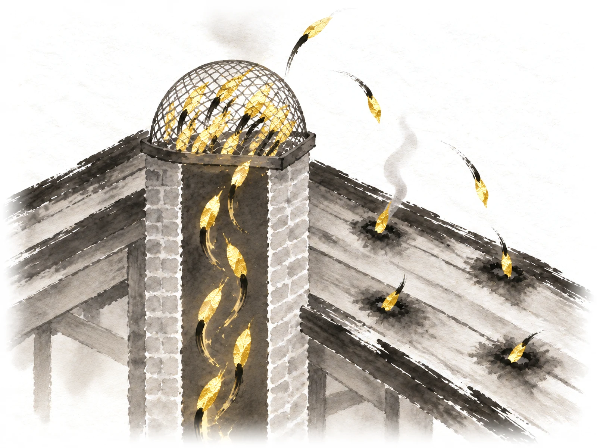
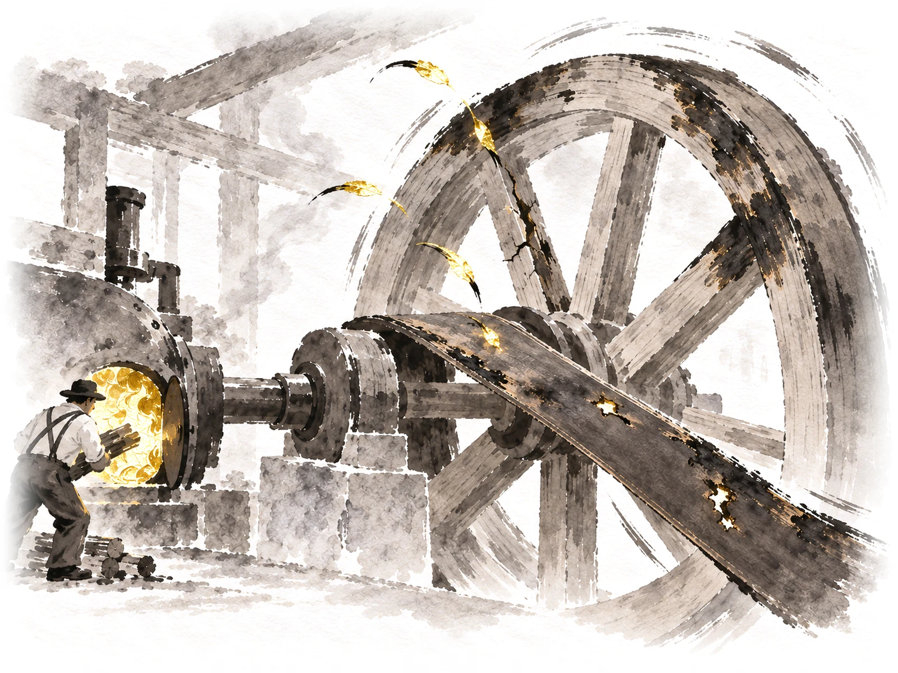
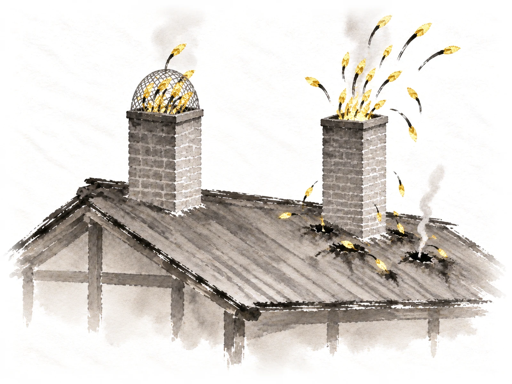

<title>Free Radicals Ideas</title>
<meta name="claude:viewport-fit-sides" content="cover">
<link rel="preconnect" href="https://fonts.googleapis.com">
<link rel="preconnect" href="https://fonts.gstatic.com" crossorigin>
<link rel="stylesheet" href="https://fonts.googleapis.com/css2?family=Ysabeau:wght@400;500&family=Instrument+Sans:wght@400;500&display=swap">
<style>
  /* Layout: three options down one column on the site's rice paper. Each is a slice of the real
     section (the Free radicals words beside the sample painting, its line under it), then a
     short note on what the other two topics would show. One light world, like the site. */
  :root {
    --paper: #f6f3ec;
    --ink: #1c1a16;
    --grey: #5f5a50;
    --hair: #d9d2c2;
    --gold: #8a6a22;
    --title: "Ysabeau", "Iowan Old Style", "Palatino Linotype", Georgia, serif;
    --body: "Instrument Sans", system-ui, -apple-system, "Segoe UI", Roboto, sans-serif;
    color-scheme: light;
  }
  [hidden] { display: none !important; }
  body {
    background: var(--paper) url("img/paper.webp") center top / 900px auto repeat;
    color: var(--ink);
    font: 18px/1.55 var(--body);
  }
  .page {
    max-width: 1180px;
    margin: 0 auto;
    padding-left: max(16px, env(safe-area-inset-left, 0px));
    padding-right: max(16px, env(safe-area-inset-right, 0px));
    padding-block: 36px 80px;
    display: grid;
    gap: 64px;
  }
  h1, h2, h3 { font-family: var(--title); font-weight: 500; line-height: 1.12; text-wrap: balance; margin: 0; }
  h1 { font-size: clamp(2rem, 5.4vw, 3rem); }
  p { margin: 0; }
  .tag { font-size: 0.78rem; letter-spacing: 0.09em; text-transform: uppercase; color: var(--gold); }
  .intro { display: grid; gap: 12px; max-width: 46rem; }
  .intro p { color: var(--grey); }

  .option { display: grid; gap: 24px; border-top: 1px solid var(--hair); padding-top: 32px; }
  .option > header { display: grid; gap: 6px; }
  .option > header h2 { font-size: clamp(1.7rem, 4vw, 2.3rem); }
  .pick { font: 500 0.8rem var(--body); letter-spacing: 0.06em; text-transform: uppercase; color: var(--gold); }

  /* the slice of the section */
  .slice {
    display: grid;
    grid-template-columns: minmax(0, 0.9fr) minmax(0, 1.25fr);
    gap: clamp(24px, 4vw, 56px);
    align-items: center;
  }
  .words { display: grid; gap: 14px; align-content: start; }
  .words h3 { font-size: clamp(1.35rem, 2.3vw, 1.7rem); }
  .words > p { color: var(--grey); }
  .words ul { list-style: none; margin: 0; padding: 0; display: grid; gap: 8px; }
  .words li { display: flex; gap: 12px; }
  .words li::before { content: "\2014"; color: var(--grey); }
  figure { margin: 0; display: grid; gap: 10px; min-width: 0; }
  .stage { position: relative; }
  .stage img { display: block; width: 100%; max-width: 100%; height: auto; mix-blend-mode: multiply; }
  .illus { position: absolute; top: 2%; right: 3%; font-size: 0.82rem; color: var(--grey); }
  .label {
    position: absolute;
    font-size: clamp(0.85rem, 1.5vw, 1rem);
    font-weight: 500;
    white-space: nowrap;
    transform: translate(-50%, -50%);
  }
  figcaption { font-size: 1.02rem; line-height: 1.4; }

  .rest { display: grid; gap: 8px; max-width: 46rem; }
  .rest h3 { font: 500 1rem var(--body); color: var(--grey); }
  .rest ul { margin: 0; padding-left: 1.2em; display: grid; gap: 6px; }
  .note { color: var(--grey); max-width: 46rem; }

  .verdict { display: grid; gap: 14px; border-top: 1px solid var(--hair); padding-top: 32px; max-width: 46rem; }
  .verdict ul { margin: 0; padding-left: 1.2em; display: grid; gap: 8px; }

  @media (max-width: 760px) {
    .slice { grid-template-columns: minmax(0, 1fr); }
    .slice figure { order: -1; }
  }
</style>

<main class="page">
  <header class="intro">
    <span class="tag">Homepage · Make sense of the science · Free radicals</span>
    <h1>Showing the harm</h1>
    <p>Three quick sample paintings for Free radicals, each beside the real words. All three keep the powerhouse from the Mitochondria picture, and now show sparks doing damage.</p>
  </header>

  <section class="option" aria-labelledby="opt-a">
    <header>
      <span class="pick">My pick</span>
      <h2 id="opt-a">A. Sparks that get out burn the roof</h2>
    </header>
    <div class="slice">
      <div class="words">
        <h3>What are free radicals—and how do antioxidants help?</h3>
        <p>A simple explanation of free radicals, the damage they can cause, and your cells’ natural defenses.</p>
        <ul>
          <li>Mitochondria are one of the main sources of free radicals</li>
          <li>Your body also makes its own antioxidants</li>
          <li>More antioxidants are not automatically better</li>
        </ul>
      </div>
      <figure>
        <div class="stage">
          
        </div>
        <figcaption>Most sparks are caught. The few that slip out leave burns.</figcaption>
      </figure>
    </div>
    <p class="note">Why I pick it: it's the truest to the science. Your body's defenses catch most free radicals, but a few get through and do damage, little by little. You see the screen working and the harm at once. The worry: the gold glowing inside the holes is bright; I'd soften it so the burns read first.</p>
  </section>
  <section class="option" aria-labelledby="opt-b">
    <header>
      <h2 id="opt-b">B. Sparks burn the machine itself</h2>
    </header>
    <div class="slice">
      <div class="words">
        <h3>What are free radicals—and how do antioxidants help?</h3>
        <p>A simple explanation of free radicals, the damage they can cause, and your cells’ natural defenses.</p>
        <ul>
          <li>Mitochondria are one of the main sources of free radicals</li>
          <li>Your body also makes its own antioxidants</li>
          <li>More antioxidants are not automatically better</li>
        </ul>
      </div>
      <figure>
        <div class="stage">
          
        </div>
        <figcaption>Stray sparks can burn the power plant's own parts.</figcaption>
      </figure>
    </div>
    <p class="note">The good: it's true that free radicals often harm the power plants that make them. The problems: it's the darkest, busiest picture, and the burns can read as old, worn wood rather than damage happening now.</p>
  </section>
  <section class="option" aria-labelledby="opt-c">
    <header>
      <h2 id="opt-c">C. With and without the screen</h2>
    </header>
    <div class="slice">
      <div class="words">
        <h3>What are free radicals—and how do antioxidants help?</h3>
        <p>A simple explanation of free radicals, the damage they can cause, and your cells’ natural defenses.</p>
        <ul>
          <li>Mitochondria are one of the main sources of free radicals</li>
          <li>Your body also makes its own antioxidants</li>
          <li>More antioxidants are not automatically better</li>
        </ul>
      </div>
      <figure>
        <div class="stage">
          
        </div>
        <figcaption>With a screen, sparks are caught. Without one, they burn holes.</figcaption>
      </figure>
    </div>
    <p class="note">The good: the clearest picture of why defenses matter, at a glance, even on a phone. The problem: your body is never without its defenses, so “no screen at all” stretches the science a little.</p>
  </section>
  <section class="verdict" aria-label="My honest take">
    <span class="tag">My honest take</span>
    <ul>
      <li>These are quick samples, one try each. The one you pick gets polished before it goes on the homepage.</li>
      <li>The burns are painted in black ink only, never red, so nothing looks like germs.</li>
      <li>The line under the picture would change to match the one you pick. On the site, the picture keeps its small “Illustrations” label.</li>
    </ul>
  </section>
</main>
